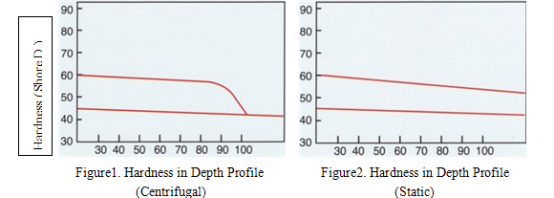
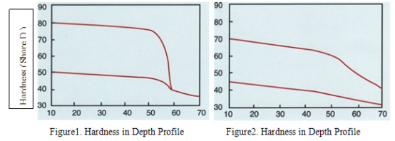
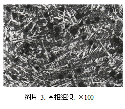
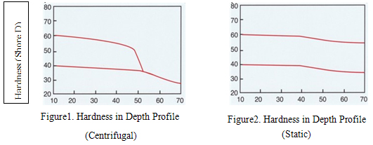
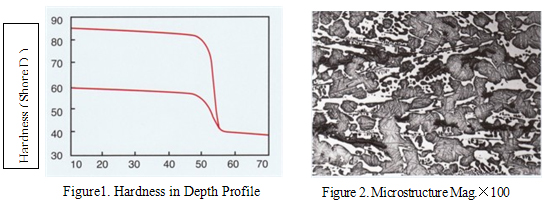
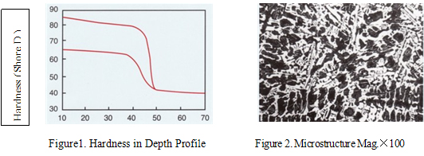
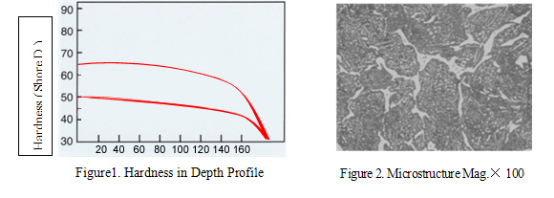
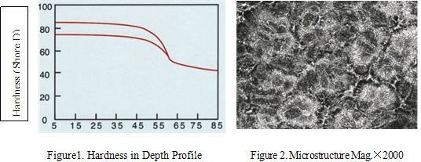
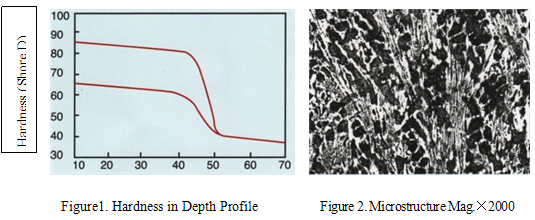

Inquiry:


Main tool used in rolling mill which can be 2-Hi, 3-Hi, 4-hi or multi-user configuration .
Product Category ：
Mill Type | Stands | Material of mill rolls | Roll Code | Chemistry Range | Hardness （HS） | Strength | ||||||
Barrel | Neck | |||||||||||
C | Cr | Ni | Mo | |||||||||
Common wire mills, and high-speed wire mills | Break Down Stands | Alloy Cast Steel | AS70II | 0.65/0.75 | - | - | 0.2/0.45 | 38-45 | ≤45 | ≥680 | ||
Roughing Stands | Adamite | AD140I | 1.3/1.5 | 0.8/1.2 | 0.5/1.2 | 0.2/0.6 | 40-48 | ≤45 | ≥500 | |||
SGP-I | SGP-I | 2.9/3.6 | 0.1/0.6 | 1.0/2.0 | 0.2/0.8 | 45/55 | 35/55 | ≥320 | ||||
Ni-Cr-Mo ductile indefinite chilled-I | SGIV | 2.9/3.6 | 0.2/0.6 | 0.5/1.0 | 0.2/0.8 | 45/55 | 35/55 | ≥320 | ||||
Intermediate stands for common wires | Ni-Cr-Mo ductile indefinite chilled-II | SGV | 2.9/3.6 | 0.3/1.2 | 1.01/2.0 | 0.2/0.8 | 55/65 | 35/55 | ≥320 | |||
Intermediate stands for common wires and high speed wires | SGP-II | SGP-II | 2.9/3.6 | 0.2/1.0 | 1.5/2.5 | 0.2/0.8 | 55/65 | 35/55 | ≥320 | |||
Ni-Cr-Mo indefinite chilled-II (double poured) | IC-II | 2.9/3.6 | 0.7/1.2 | 1.01/2.0 | 0.2/0.6 | 55-65 | 35/55 | ≥350 | ||||
Finishing stands for common wires | ICDP-IV (High Ni-Cr) | ICIV | 2.9/3.6 | 1.0/2.0 | 3.01/4.5 | 0.2/1.0 | 70/80 | 35/50 | ≥350 | |||
Rolls or rings for high speed wires pre-finishing stands | ICDP-IV (High Ni-Cr indefinite chilled double poured) | ICIV | 2.9/3.6 | 1.0/2.0 | 3.01/4.5 | 0.2/1.0 | 70/80 | 35/50 | ≥350 | |||
Enhanced high wear-resistance roll rings | 0.8/2.2 | 2.0/9.0 | 0.1/2.0 | 1.0/10.0 | 75-85 | |||||||
Rings for high speed wires finishing stands | Tungsten carbide | |||||||||||
Bar mills | Break down stand | Alloy cast steel | AS70-II | 0.65/0.75 | 0.2/0.45 | 38/45 | ≤45 | ≥680 | ||||
Roughing stands | BGK-1 | AD140- I | 1.3/1.5 | 0.8/1.2 | 0.5/1.2 | 0.2/0.6 | 40/50 | ≤45 | ≥500 | |||
SGP-1 | SGP-I | 2.9/3.6 | 0.1/0.6 | 1.0/2.0 | 0.2/0.8 | 45/55 | 35/55 | ≥320 | ||||
Intermediate Stands | Ni-Cr-Mo indefinite chilled-II (double poured) | SGV | 2.9/3.6 | 0.3/1.2 | 1.01/2.0 | 0.2/0.8 | 60/70 | 35/55 | ≥350 | |||
SGP-II (double poured) | SGP-II | 2.9/3.6 | 0.2/1.0 | 1.5/2.5 | 0.2/0.8 | 55/65 | 35/55 | ≥320 | ||||
Finishing stand | Bainite ductile double poured-I | SGA-I | 2.9/3.6 | 0.2/1.0 | 3.01/4.0 | 0.5/1.0 | 68/75 | 35/50 | ≥350 | |||
Large-sized bar mills | Break Down Stands | Forged steel | 0.55/0.65 | 0.8/1.2 | ≤0.25 | 0.2/0.3 | 35/45 | |||||
Alloy cast steel | AS70-II | 0.65/0.75 | - | - | 0.2/0.45 | 38-45 | ≤45 | ≥680 | ||||
AS75 | 0.70/0.80 | 0.75/1.0 | 0.2/0.45 | 35/45 | ≤45 | ≥680 | ||||||
BGK-I | AD140-I | 1.3/1.5 | 0.8/1.2 | 0.5/1.2 | 0.2/0.6 | 40/48 | ≤45 | ≥500 | ||||
Intermediate stands | SGP-II | SGP-II | 2.9/3.6 | 0.2/1.0 | 1.5/2.5 | 0.2/0.8 | 60/65 | 35/50 | ≥350 | |||
Bainite ductile double poured-I | SGA-I | 2.9/3.6 | 0.2/1.0 | 3.01/4.0 | 0.5/1.0 | 65/73 | 35/50 | ≥350 | ||||
ICDP-IV (High Ni-Cr indefinite chilled double poured) | ICIV | 2.9/3.6 | 1.0/2.0 | 3.01/4.8 | 0.2/1.0 | 65/73 | 35/50 | ≥350 | ||||
Finishing stands | Bainite ductile double poured-I | SGA-I | 2.9/3.6 | 0.2/1.0 | 3.01/4.0 | 0.5/1.0 | 68/75 | 35/50 | ≥350 | |||
ICDP-IV (High Ni-Cr indefinite chilled double poured) | ICIV | 2.9/3.6 | 1.0/2.0 | 3.01/4.8 | 0.2/1.0 | 65/75 | 35/50 | ≥350 | ||||
Roll or roll rings for Trimming mill | ICDP-IV (High Ni-Cr indefinite chilled double poured) | ICIV | 2.9/3.6 | 1.0/2.0 | 3.01/4.8 | 0.2/1.0 | 70/80 | 35/50 | ≥350 | |||
Enhanced high wear-resistance roll rings | 0.8/2.2 | 2.0/9.0 | 0.1/2.0 | 1.0/10.0 | 75-85 | |||||||
Section Mills | Break down stand | Alloy cast steel | AS70-II | 0.65/0.75 | 0.2/0.45 | 35/45 | ≤45 | ≥680 | ||||
Roughing mill | SGP-1 | SGP-I | 2.9/3.6 | 0.1/0.6 | 1.0/2.0 | 0.2/0.8 | 45/55 | 35/55 | ≥320 | |||
Intermediate Stands | SGP-II (double poured) | SGP-II | 2.9/3.6 | 0.2/1.0 | 1.5/2.5 | 0.2/0.8 | 55/65 | 35/55 | ≥350 | |||
Ni-Cr-Mo indefinite chilled-II (double poured) | ICII | 2.9/3.6 | 0.7/1.5 | 1.01/2.0 | 0.2/0.6 | 55/65 | 35/55 | ≥350 | ||||
Finishing stand | SGP-II (double poured) | SGP-II | 2.9/3.6 | 0.2/1.0 | 1.5/2.5 | 0.2/0.8 | 60/70 | 35/55 | ≥350 | |||
Ni-Cr-Mo indefinite chilled-II (double poured) | ICII | 2.9/3.6 | 0.7/1.2 | 1.01/2.0 | 0.2/0.6 | 60/70 | 35/55 | ≥350 | ||||
Straightening stand | SGP-II | SGP-II | 2.9/3.6 | 0.2/1.0 | 1.5/2.5 | 0.2/0.8 | 55/65 | 35/55 | ≥320 | |||
Narrow strip mill, middle-broad strip mill | Vertical roll | SGP-II | SGP-II | 2.9/3.6 | 0.2/1.0 | 1.5/2.5 | 0.2/0.8 | 55/65 | 35/55 | ≥350 | ||
2-Hi work roll | SGP-II | SGP-II | 2.9/3.6 | 0.2/1.0 | 1.5/2.5 | 0.2/0.8 | 55/65 | 35/55 | ≥350 | |||
Back-up roll | Admite | AD160 I | 1.5/1.7 | 0.8/2.0 | ≥0.20 | 0.2/0.6 | 50/60 | ≤50 | ≥490 | |||
4-Hi work roll | ICDP-IV (High Ni-Cr indefinite chilled double poured) | ICIV | 2.9/3.6 | 1.0/2.0 | 3.01/4.5 | 0.2/1.0 | 75/83 | 35/50 | ≥350 | |||
High Chrome Iron double poured- I | HC-I | 2.3/3.3 | 12.0/15.0 | 0.7/1.7 | 0.7/1.5 | 70/78 | 32/45 | ≥350 | ||||
High Chrome Iron double poured- II | HC-II | 2.3/3.3 | 15.01/18.0 | 0.7/1.7 | 0.7/1.5 | 70/78 | 32/45 | ≥350 | ||||
Advanced New Materials of mill rolls | Work roll for bar and strip mills | High Speed Steel | HSS | 1.5/2.2 | 3.0/12.0 | 0.00/1.5 | 2.0/8.0 | 75/85 | 30/45 | ≥350 | ||
Back-up roll for strip steel | High alloy steel back-up roll | 0.3/1.0 | 2.0/5.5 | 0.3/1.2 | 0.4/1.5 | 50/60 | ≤50 | ≥680 | ||||
2-Hi work roll for section mill | fatigue-resistance, high wear-resistance Roughing roll | 0.3/1.0 | 2.0/8.0 | 0.3/1.2 | 0.1/2.0 | 50/60 | ≤50 | ≥680 | ||||
Straightening and finishing stands for bar and wire mills | Enhanced wear-resistance roll rings | 0.8/2.2 | 2.0/9.0 | 0.1/2.0 | 1.0/10.0 | 75/85 | ||||||
Centrifugal and Static Casting Non Continuous Carbide Bainite Roll and Ring
By adding many Ni, Mo alloy in the spheroidal cast iron, it can get very good pearlite, bainite and martensite matrix. While the graphite is spheroidal shaped, and has high heat conductivity, high tensile strength, so by changing the chemistry and heat treatment of bainite, martensite and Acicular matrix,it can get very dense net-shaped new cementite and increase the wear-resistance.

MECHANICAL PROPERTIES | Centrifugal | Static |
Hardness of shell | HSD 50-80 | HSD 45-70 |
Hardness of core | HSD 35-48 | HSD 35-55 |
Tensile Strength of core | ≥450MPa | ≥300MPa |
Chemical Analysis
C | Si | Mn | Ni | Cr | Mo |
3.0/3.4 | 1.5/2.5 | 0.8/1.0 | 2.5/4.5 | ≤0.2 | 0.7/1.0 |
APPLICATIONS
For roughing rod/bar mills
Thanks to its higher content of Ni and Mo alloys, pearlite, bainite and martensite matrixes with excellent performance are produced. The graphite is in spherical form, good heat transfer property and high tensile strength. Through changing the structure into bainite and martensite matrix, chemical composition of accicular spherical iron of heat treatment, a dense reticular primary cementite with high wear-resistance is produced.


MECHANICAL PROPERTIES | Centrifugal | Static |
Hardness of shell | HSD 50-80 | HSD 45-70 |
Hardness of core | HSD 35-48 | HSD 35-55 |
Tensile Strength of core | ≥450MPa | ≥300MPa |
Chemical Analysis
Material | Hardness (HSD) | C | Si | Mn | Ni | Cr | Mo | Mg |
SGP I | 50-65 | 2.9/3.4 | 1.2/1.8 | 0.4/1.0 | 0.5/1.0 | 0.2/0.6 | 0.2/0.6 | ≥0.04 |
SGP II | 50-70 | 2.9/3.4 | 1.2/1.8 | 0.4/1.0 | 1.0/3.0 | 0.2/1.2 | 0.2/0.6 | ≥0.04 |
SGA | 60-80 | 3.0/3.5 | 1.2/1.8 | 0.4/1.0 | 3.0/4.5 | 0.2/1.2 | 0.6/1.0 | ≥0.04 |
APPLICATIONS
Various type of continuous rough ,intermediate and finish mills for processing bars, sections and strips. Used as the secondary finishing and back-up rolls. Also suitable for use on stainless-steel hot strip mills.
Its microstructure is composed of matrix and carbide with carbon content of 1.3-2.3%，depending on content of alloy and heat treatment process. The matrix consists of pearlite and bainite, with the addition of Cr, Mo and Ni for higher stability of carbide, enhanced high-temperature resistance and strengthened matrix, the roll has the special merits of being small in drop of hardness, highly wear and high-temperature resistant, and high in load bearing capacity feature etc.
. | ||||
 | ||||
MECHANICAL PROPERTIES | Centrifugal | Static | ||
Hardness of shell | HSD 40-60 | HSD 40-60 | ||
Hardness of core | HSD 35-50 | HSD 40-55 | ||
Tensile Strength of core | ≥450MPa | ≥420MPa | ||

C | Si | Mn | Ni | Cr | Mo |
1.3/2.3 | 0.3/0.6 | 0.6/1.2 | ≥0.2 | 0.8/1.6 | 0.2/0.6 |
Mainly used for the front stand of section mill and hot strip mill, Also used for roughing and intermediate mill stand for wire and bar mills.
（4）Centrifugal Casting Alloy Indefinite Chilled Roll and Ring
The outer layer exhibits a remarkable mechanical performance, the quantity of graphite in the roll work layer remains basically unchanged along the depth, producing therefore no adverse effect on the decrease of hardness of work layer. The hardness of roll depends mainly on type of matrix (sorbite, bainite, martensite).
 | |||
MECHANICAL PROPERTIES | |||
Hardness of shell | HSD60-85 | ||
Hardness of core | HSD35-48 | ||
Tensile Strength of core | ≥450MPa | ||
Material | Hardness (HSD) | C | Si | Mn | Ni | Cr | Mo |
Indefinite I | 60-70 | 3.0/3.5 | 0.5/1.0 | 0.5/1.0 | 0.5/1.0 | 0.5/1.0 | 0.2/0.6 |
Indefinite II | 62-72 | 3.0/3.5 | 0.5/1.0 | 0.5/1.0 | 1.0/2.0 | 0.5/1.0 | 0.2/0.6 |
Indefinite III | 65-75 | 3.0/3.5 | 0.5/1.0 | 0.5/1.0 | 2.0/3.0 | 0.7/1.2 | 0.2/0.6 |
Indefinite IV | 70-80 | 3.0/3.5 | 0.5/1.0 | 0.5/1.0 | 3.0/5.0 | 1.0/2.0 | 0.2/0.6 |
It is used in the finishing stands of tandem strip mills and tandem bar mills. Also used in pre-finishing stands of high speed wire mills, intermediate stand and early finishing stand of small section mills, it can also be used for thin plate and straigtening process.
（5）Centrifugal Casting Definite Chilled Cast Iron Roll and Ring
The rolls exhibit improved mechanical properties due to presence of chilled surface structure and the change of pinetree-like structure . The hardness and type of matrix of roll depend on conditions of application. The roll produced with centrifugal method basically eliminates the presence of graphite in its work layer while the core is made of nodular cast iron, increasing as a result, both the wear-resistance and break-resistance property.
 |
MECHANICAL PROPERTIES | |
Hardness of shell | HSD65-85 |
Hardness of core | HSD35-48 |
Tensile Strength of core | ≥450MPa |
Material | Hardness (HSD) | C | Si | Mn | Ni | Cr | Mo |
Chilled I | 65-75 | 3.0/3.5 | 0.25/0.5 | 0.3/0.8 | 0.8/2.0 | 0.4/1.0 | 0.2/0.6 |
Chilled II | 65-80 | 3.0/3.5 | 0.25/0.5 | 0.3/0.8 | 2.0/3.0 | 0.5/1.2 | 0.2/0.6 |
Chilled III | 70-85 | 3.0/3.5 | 0.25/0.5 | 0.3/0.8 | 3.0/4.5 | 0.6/1.5 | 0.2/0.6 |
It is used for the final stands of wire, bar and small section, or used to roll light-duty material mills.
（6）Centrifugal Casting High Carbon Adamite Ring
Adamite is the kind of steel that with a carbon composition between steel and cast iron, it integrated strength and roughness of steel and high hardness and good wear resistance of cast iron. In order to enhance wear resistance of ring, its carbon content has been limited close to cast iron. The microstructure of the shell is made up of matrix (sorbite) and carbide. This kind of structure maintains almost constant hardness in depth and equal wear resistance throughout the shell, therefore, when making rolled pieces with large cross sections, can ensure uniformity of specifications across the product. In order to adapt to heavy workload, the inside part of the ring is made of graphite steel with high strength.
 | |||
MECHANICAL PROPERTIES | |||
Hardness of shell | HSD50-65 | ||
Hardness of core | HSD38-48 | ||
Tensile Strength of core | ≥450MPa | ||
Material | C | Si | Mn | Ni | Cr | Mo |
AD180 | 1.7/1.9 | 0.3/0.8 | 0.6/1.1 | 0.5/2.0 | 0.8/1.5 | 0.2/0.6 |
AD190 | 1.8/2.0 | 0.3/0.8 | 0.8/1.2 | 1.0/2.0 | 1.5/3.5 | 0.2/0.6 |
AD200 | 1.9/2.1 | 0.3/0.8 | 0.8/1.2 | 0.6/2.5 | 0.6/2.0 | 0.3/0.8 |
Mainly used on horizontal roll stand and vertical roll stand of universal mill and H-beam mill
（7）.Centrifugal Casting High Speed Steel Roll and Ring
The outer layer is a complicated carbide structure of high-carbon steel alloys containing Cr,Mo,W,V,Ni and Nb, which is inlaid into the martensite structure. Through control of carbon control and comprehensive heat treatment process, the roll shows optimal wear and thermal fatigue resistant properties and surface of the oxide assumes a film structure. The residual stress is also reduced to a minimum.
 |
MECHANICAL PROPERTIES | |
Hardness of shell | HSD75-85 |
Hardness of core | HSD35-48 |
Tensile Strength of core | ≥450MPa |
C | Si | Mn | Cr | Mo | W | V | Nb |
1.6/2.3 | 0.3/0.9 | 0.2/0.8 | 3.0/6.0 | 3.0/6.0 | 1.0/4.0 | 2.0/6.0 | 1.0/3.0 |
Widely used as the F5 and F6 working rolls for hot strip mills. Also used in pre-finishing stand of high speed wire mills, and finishing stands of bar mills
（8）Centrifugal Casting High Chrome Iron Roll
Thanks to its high content of M7C3, type carbide in range of 20-30% and discontinuous network distribution of carbide, the roll offers a high wear resistance performance. The matrix is finely-distributed with secondary carbides (M7C3、M23C5 and M3C types), increasing therefore the wear resistance of roll, The Cr2O3 enriched oxide film on the roll surfaces is highly resistant to oxidization and plastic strain, making the roll extremely suitable for steel hot milling process.
 | |||
MECHANICAL PROPERTIES | |||
Hardness of shell | HSD65-85 | ||
Hardness of core | HSD35-48 | ||
Tensile Strength of core | ≥450MPa | ||
C | Si | Mn | Cr | Ni | Mo |
2.4/3.0 | 0.4/0.6 | 0.8/1.2 | 16.0/20.0 | 0.8/1.5 | 0.8/2.0 |
Mainly used for the 3 or 4 stands before the finishing stands for continuous hot strip mill, and the late roughing stands.
ZALO